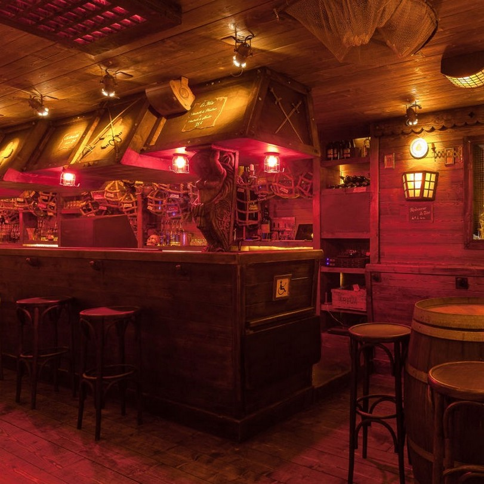
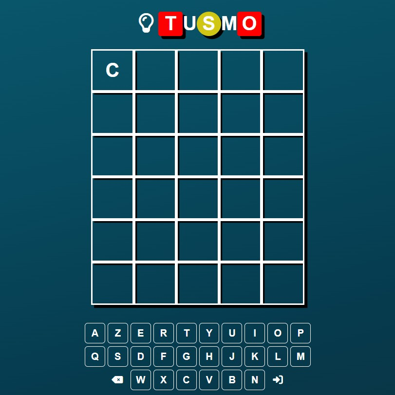

TP Individuel - Création de la page web d'un restaurant fictif. L'objectif était de créer une page d'accueil, une page de menu et une page de contact afin de s'exercer au HTML et CSS Flexbox.

TP de groupe - Reproduction du jeu Motus. Travail en groupe sur la création d'un jeu de type Motus. Le but était de s'exercer à l'utilisation du Javascript, plus particulièrement la manipulation du DOM et gestion des événements côté client.
Projet Personnel - Escape Game Numérique. Projet réalisé par initiative personnelle. La création de cet Escape Game Numérique m'a permis de mettre en pratique mes compétences en HTML, CSS et Javascript, et de pousser la pratique de la manipulation du DOM et de la gestion des événements.
Première version de mon CV, un peu plus orientée Web. Il s'agissait à la base d'un TP individuel, visant à s'exercer au HTML, CSS Flexbox et animations CSS.
TP de groupe - Création d'une application de gestion de scores pour jeux de fléchettes. Le but était de travailler en équipe afin de créer une application tout en s'exerçant à l'utilisation de React.